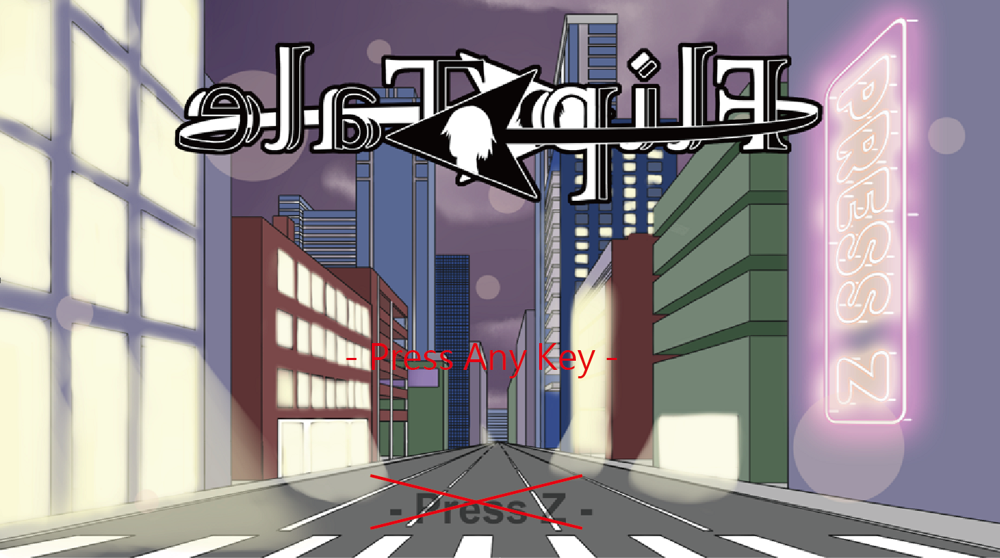
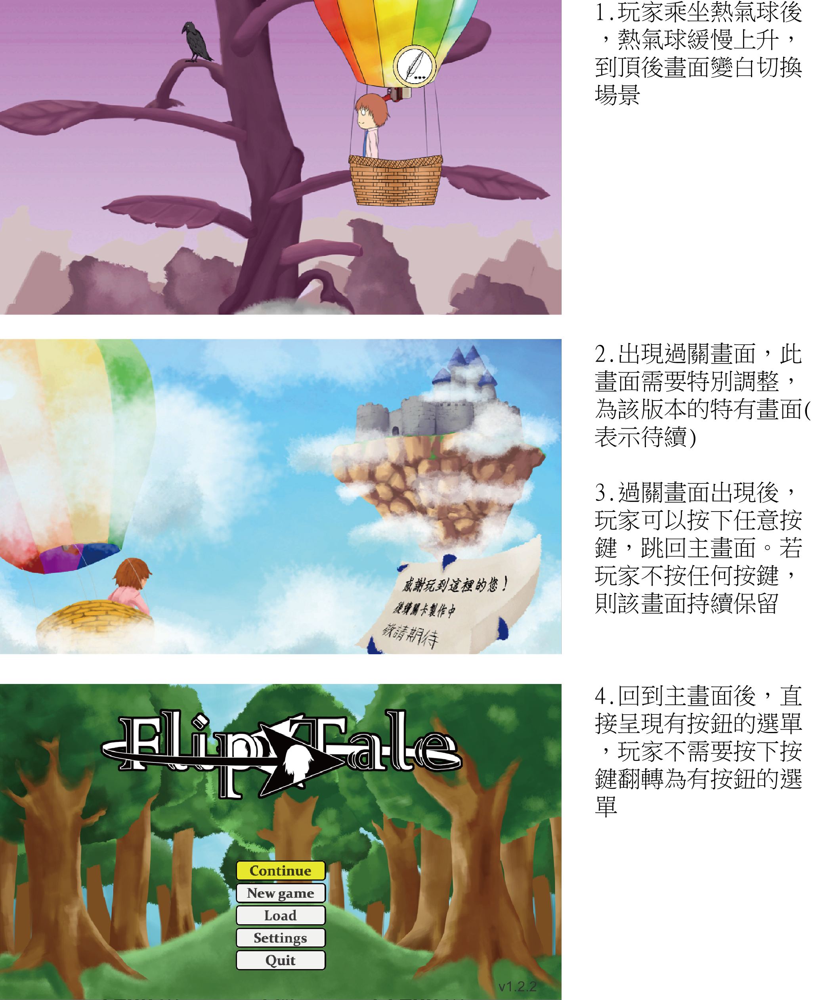
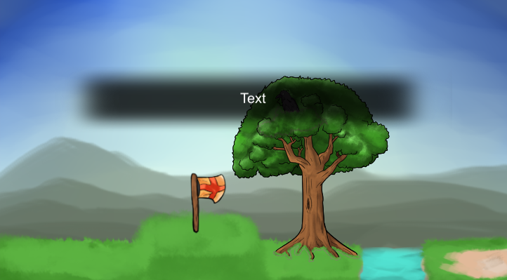
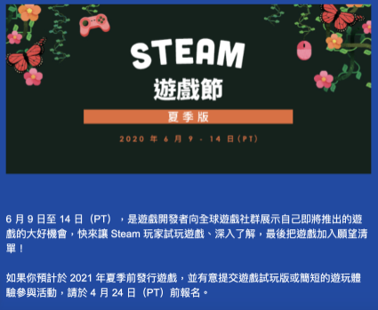

建置版本－2020遊戲節Demo
一、概述
此版本為對應Steam 2020夏季遊戲節所建置的Demo版本，該版本包含完整的第一關。第一關過完後即結束，並不會進入第二關。
二、主畫面或UI相關調整
初始畫面（視情況決定是否要做）
初始畫面改為按下「任意按鈕」均可翻轉進入主畫面，並將提示文字上移，如下所示：
主畫面設定
於自訂按紐頁面時，玩家不可將按鈕改為以下的觸發方式：
- 跳脫鍵（Esc）
- 於滑鼠上的任意按鍵
筆記本設定
於筆記本頁面時，顯示「退回桌面」選項於「回主選單」下方。當玩家選擇時彈出與「退回桌面」相同的詢問視窗，若選擇確認則直接回到桌面，遊戲關閉。
三、序幕（Prologue）調整
序幕（Prologue）將因應新的劇情，調整為新的文字劇情。其過場形式使用文字圖片過場，以腳本編輯器編寫。
四、新手教學與第一關調整
新手教學使用第一關地圖（前三張），呈現於畫面上。形式為區域性教學（由左到右觸發），當主角於特定位置時，畫面顯示「教學頁面」。每個區域所對應的教學頁面如下所示（紅框處）：

教學頁面具有以下性質：
- 翻轉時，教學頁面獨立於其上，不受翻轉所影響
- 若玩家刻意更改操作按鍵，則教學頁面上的「按鍵icon」需要同步更新為新按鍵
- 兩個相鄰教學頁面切換時，以淡入淡出的方式呈現
- 教學頁面不會消失，玩家可以隨時回到該地圖進行查看
第一關將進行以下調整：
- 出生點設定於第一關最左，醒來時不會有筆記
- 翻轉相關筆記，改為進入1-1反面時觸發
- 主角疑問（我是誰我在哪）筆記，改為進入1-2時觸發
- 渡鴉從墓碑上移除，改為站在1-2的桿子上（樹中渡鴉飛走仍然保留）。藤蔓上之渡鴉仍然保留
- 藤蔓中上的渡鴉，改為站在藤蔓下方的梗上
五、結尾調整
第一關結尾調整進行以下調整：
六、即時回饋機制
某些時機點需要顯示即時回饋，以對話方式顯示（如下所示）。程式則根據時機點的鍵值索引文字。
目前顯示需求如下：
- too_heavy：第一關拾取鍋子或鐵梯時，手持籃子或桶子翻面時。
七、其他調整
美術部分
- 第一關過關畫面需要新增「待續...」等相關資訊，表示該版本為Demo版
- 筆記本開啟內頁，需要顯示照片
- 設定頁面的左右按紐，改為醒目的白色按鈕
音效部分
- 若使用互動鍵卻沒有觸發任何事件（例如：未觸發撿道具或場景事件），則播放「互動失敗的預設音效」。音效呈現上為極短的悶悶音效
八、Steam相關
活動簡圖如下：
